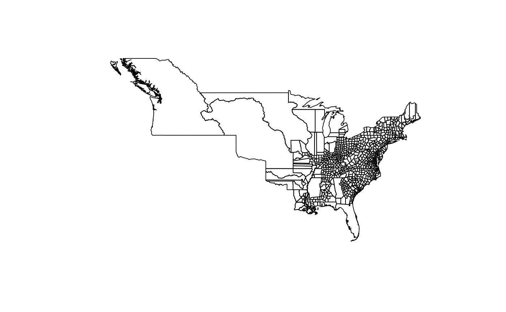
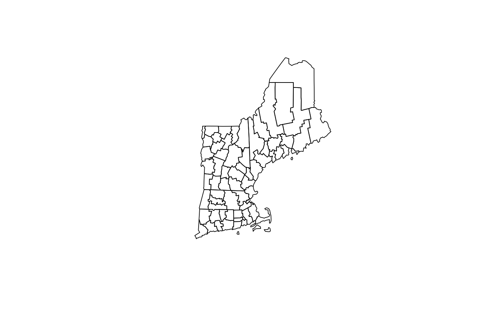

County boundaries (contemporary and historical)
Get the current (2016) boundaries for U.S counties from the U.S. Census Bureau, or get historical county boundaries for dates between 30 December 1636 and 31 December 2000.
us_counties(map_date = NULL, resolution = c("low", "high"), states = NULL)
Arguments
| map_date | The date of the boundaries as some object coercible to a date
with |
|---|---|
| resolution | The resolution of the map. |
| states | A character vector of state or territory names or
abbreviations. Only boundaries for those states/territories will be
returned. If |
Value
An sf object.
See also
For documentation of and citation to the underlying shapefiles for
contemporary data from the U.S. Census Bureau, see
census_boundaries. For documentation of
and citation to the underlying shapefiles for historical data from the
Atlas of Historical County Boundaries, see ahcb_boundaries.
Examples
if (require(USAboundariesData) && require(sf)) { contemporary_us <- us_counties() historical_us <- us_counties("1820-07-04") contemporary_ne <- us_counties(states = c("Massachusetts", "Vermont", "Maine", "New Hampshire", "Rhode Island", "Connecticut")) historical_ne <- us_counties("1803-04-28", states = c("Massachusetts", "Vermont", "Maine", "New Hampshire", "Rhode Island", "Connecticut"), resolution = "high") plot(st_geometry(contemporary_us)) plot(st_geometry(historical_us)) plot(st_geometry(contemporary_ne)) plot(st_geometry(historical_ne)) }